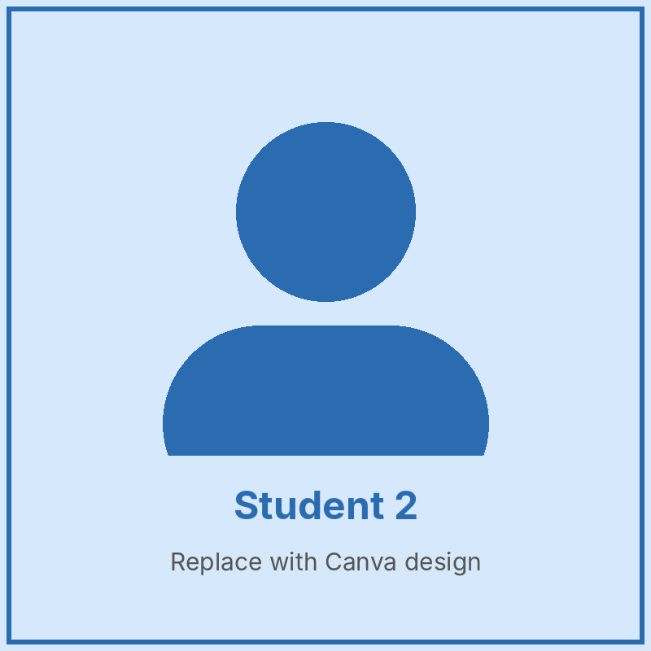
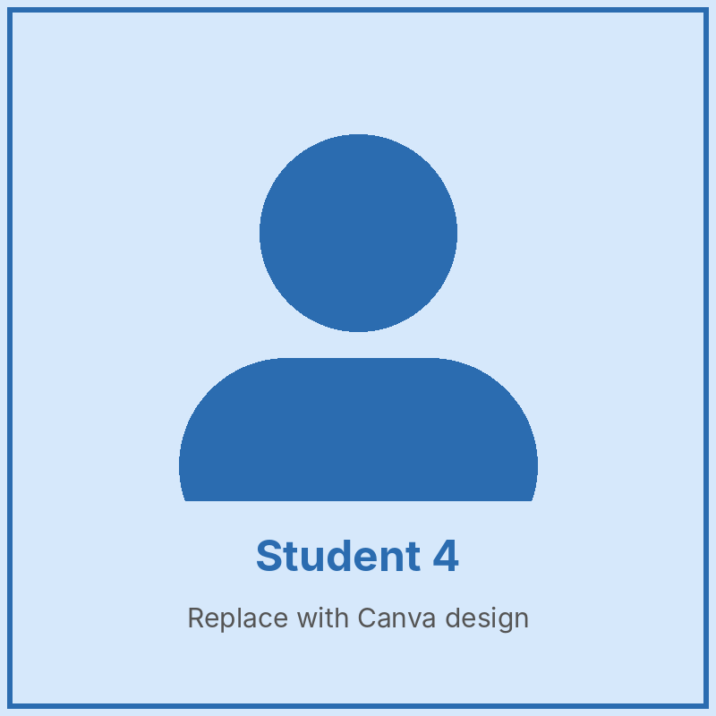
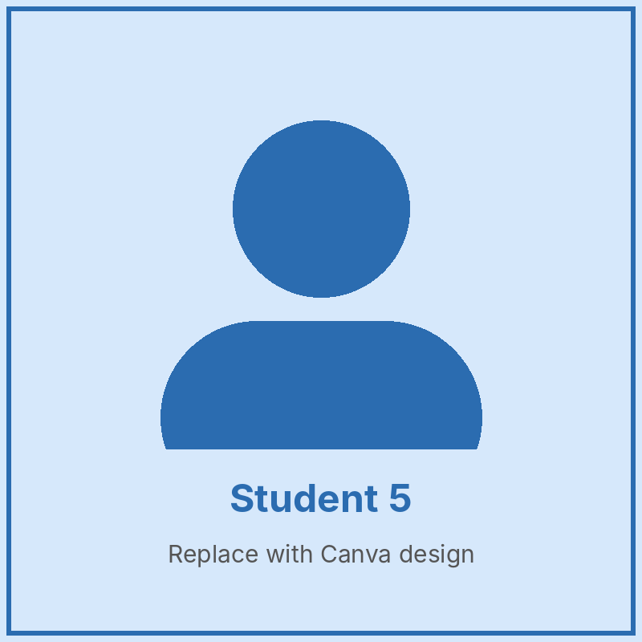
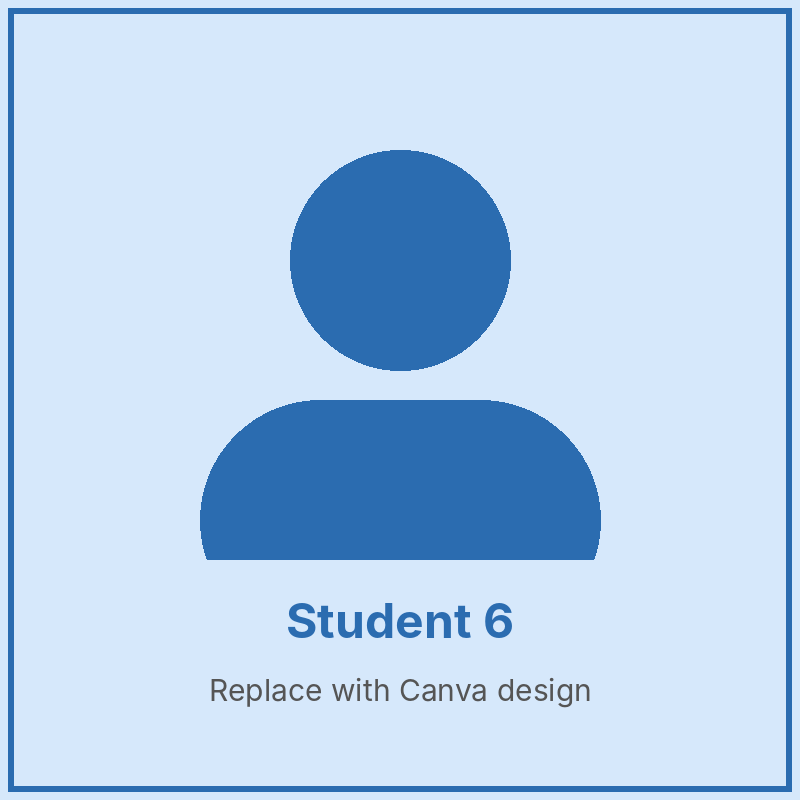

Our Class Teacher

Class Teacher
About the Class
Primary 3 pupils are curious explorers. The class introduces multiplication and division, longer reading passages and simple science experiments. Pupils also start presenting their work to the class to build confidence in speaking.
Our Subjects
- English Language – Comprehension, grammar, composition and spelling.
- Mathematics – Multiplication, division, fractions and measurement.
- Basic Science & Technology – Simple experiments, energy, food and nutrition.
- Social Studies – Our culture, festivals and national symbols.
- Computer Studies – Typing practice and drawing with Paint.
- Civic Education – Honesty, responsibility and being a good citizen.
Meet Our Pupils



